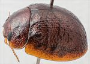
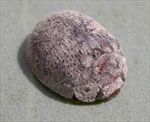
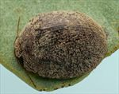
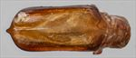
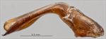
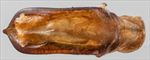
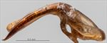
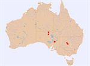

Click on images to enlarge
{kind=link}

Male, Wilpena, Flinders Ranges
{kind=link}

Female, Oraparinna, Flinders Ranges, South Australia
{kind=link}

Male, Ivanhoe, New South Wales
{kind=link}

Aedeagus, dorsal view (Wilpena, Flinders Ranges, South Australia)
{kind=link}

Aedeagus, lateral view (Wilpena, Flinders Ranges, South Australia)
{kind=link}

Aedeagus, dorsal view (Yathong Nature Reserve, New South Wales)
{kind=link}

Aedeagus, lateral view (Yathong Nature Reserve, New South Wales)
{kind=link}

Distribution
Name
Trachymela sp. Ta97
Reference specimen
2004-288, Wilpena, Flinders Ranges, South Australia.
Adult Description
Length: ♂ 5.7–6.6 mm (n=12), ♀ 6.1–7.4 mm (n=21).
Colouration:
- Head: uniformly mid-brown or reddish-brown, labrum yellow-brown, mandibles black-tipped; antennomeres 1–5 straw-brown, 6–11 concolorous or (less often) fractionally darker at distal extremes.
- Pronotum: brown, concolorous with head, a short longitudinal black or dark-brown macula of uneven thickness extends towards posterior margin on each side from just behind front margin roughly level with inside edge of each eye, a small round black or dark-brown elevated patch is centred on each foveal area, with a small, more irregular dark macula also often present behind it and close to posterior edge, only rarely are dark markings completely absent.
- Scutellum: brown, concolorous with pronotum or fractionally darker, often narrowly edged in darker brown.
- Elytra: brown, concolorous with pronotum, the anterior half to two-thirds (rarely all) of suture is usually black or darker brown, a black ridge or line of black verrucae extends posteriorly for a short distance from anterior margin about midway between scutellum and humeral callus, black or dark brown wart-like elevated verrucae are scattered over elytral surface, with their density noticeably lower over antero-median depression, sometimes verrucae line up in longitudinal rows, most noticeably in posterior third of disc, the remaining verrucae are scattered less regularly but some may be roughly aligned transversely just behind or less often in front of antero-median depression and a line of roughly evenly spaced black or dark-brown verrucae is often present along posterior half of marginal depression; humeral callus black, sometimes only sparsely, punctures concolorous with interstices.
- Venter & Legs: head and thoracic ventrites mid- to dark-brown, abdominal ventrites concolorous or very slightly paler, legs noticeably paler, epipleura light-brown.
- Cuticular Wax: a light to moderately dense layer of light-brown or grey-brown cuticular wax that does not conceal verrucae is present over most of dorsal surface, with the layer slightly thicker over pronotum and along anterior margin of elytra (this is especially pronounced in the Dalhousie specimen).
Morphology:
- Head: shape uniformly curved and moderately round (H ♂=41–45% BL, ♀=42–47% BL), elytral summit a little in front of middle of elytral margin; puncture size moderate (pd ≈ 2–3× ef), and relatively evenly but densely distributed. Antennae moderately long (AL ♂=37–40% BL, ♀=32–35% BL), filiform.
- Pronotum: almost evenly curved transversely throughout with extreme lateral margins sometimes slightly explanate, foveal depression very slight or (rarely) absent, a small, round pimple-like elevation present behind centre of each eye, puncturation on disc usually clearly impressed, punctures similar in size or fractionally larger than on head but slightly more separated, relatively evenly distributed and moderately dense in discal area, interstices in discal area relatively smooth, never obscuring punctures, rarely with adjacent ones joining to form fine, elevated and usually longitudinally oriented wrinkles, punctures becoming much coarser towards margin. Front margins join lateral margins in a smoothly rounded right-angle, with lateral margin usually straight for a short distance before curving smoothly and gradually towards rear margin.
- Scutellum: surface slightly rough, densely punctured with punctures similar in size to those on adjacent surface of pronotum.
- Elytra: in lateral view, lightly and almost evenly curved from just behind scutellum to shortly before apex where curvature increases noticeably, evenly curved transversely throughout with at most very slightly explanate margins, punctures moderately large and relatively evenly distributed, only rarely partially obliterated by rugose interstices in anterior two-thirds, small, round and quite inconspicuous verrucae are scattered sparsely over the discal area, sometimes relatively evenly distributed, sometimes more clumped, with the transverse depression always having fewer (or none) and its anterior and posterior margins sometimes with higher concentrations, verrucae are rarely aligned longitudinally, larger verrucae and elevated areas are usually present along discal margin, interstices usually relatively smooth, less often more convex, sometimes forming transverse wrinkles posterior to transverse depression, surface continuous under humeral callus. Vertical extension of epipleura considerable (HCE/PW=0.38–0.40).
- Venter: prosternal process narrowest anteriorly, widening gradually towards posterior, closed anteriorly, a scatter of short setae on prosternal process, absent from mesoventrite, a single seta on anterior and median trochanter; front edge of metaventrite beveled, truncate; inner edge of epipleura usually with a line of short setae posteriorly, generally little further than anterior edge of 3rd abdominal segment, less often setae are very sparse or even absent.
Male Genitalia (Aedeagus):
- Dimensions: relatively short (LPE=23–27% BL).
- Dorsal view: shaft almost parallel-sided from just after basal sulcus to near anterior of ostial opening with the sides very slightly sinuous resulting in central section fractionally narrower than either end, apical edge converges very rapidly to tip which is very small and quite pointed, dorso-median channel usually well-defined but may be short or extend as far as halfway to basal sulcus, dorsolateral channels short, dorsal ostial processes protrude almost to apex, but considerably anteriorly; tip small and smoothly triangular.
- Lateral view: shaft relatively thin from basal sulcus to near apex, curved sharply through about 60° near basal sulcus then dorsal and ventral surfaces straight almost to apex, tip deflexed.
Immature Stages
Unknown.
Similar species
- Ta86: this species may be distinguished by its more ruggedly sculptured elytral surface, with verrucae rarely isolated as in Ta97 but often joined into usually longitudinal but sometimes even transverse ridges by elevated (and often black) interstices. The elytral epipleura are usually at least partially black in Ta86.
- Ta87: this species also has more ruggedly sculptured elytra than Ta97. It also tends to have black epipleura. However, specimens of Ta87 collected in the Flinders Ranges are more similar to Ta97 in both of these characters. Their shape can still distinguish them (Ta97 more rounded than the flatter and narrower Ta87), and the aedeagus shape is very different.
- Ta185:
Notes
- Distribution & Host Associations: Most of the available specimens of Ta97 have been collected in the Flinders Ranges of South Australia. Other specimns are from the far north of South Australia and central New South Wales. where it is found on Eucalyptus intertexta (Symphyomyrtus : Adnataria). Two other specimens (both female) were collected in the far north of South Australia from E. coolabah (also Adnataria), while a N.S.W. specimen was collected from E. intertexta.
- Host Associations: All host records for this species are from box eucalypts (Symphyomyrtus: Adnataria), particularly Eucalyptus intertexta (n=14) and E. coolabah (n=2).
- Morphological Variation: In most characters, the few individuals not from the Flinders Ranges fit well within the range of variation of the Flinders Ranges specimens, though the A-A/BL ratio of a specimen from Dalhousie a little smaller than what would be expected for a specimen of its size. In dorsal view, the strongly sclerotised lateral walls of the aedeagus are typically of subuniform width throughout, but occasionally expand medially immediately posterior to the ostium. In a few specimens (most notably one from Yathong, NSW), this inward extension of sclerotisation is more pronounced, imparting a more ovate outline to the ostial depression (though it remains open posteriorly).
Copyright © 2026. All rights reserved.